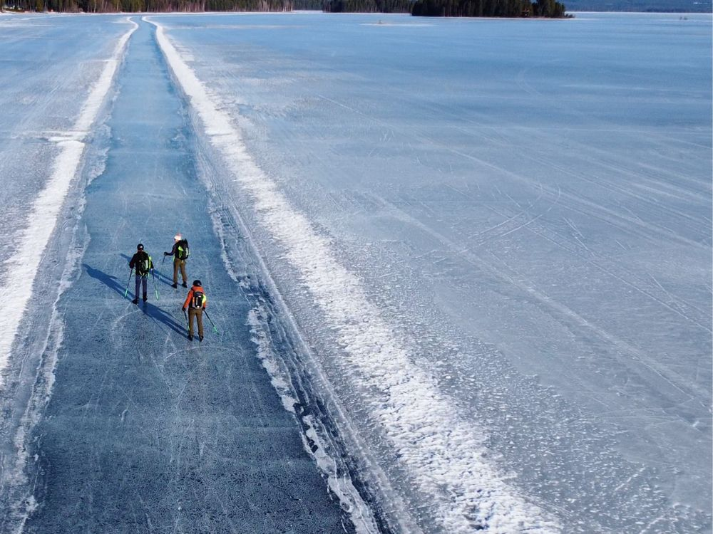
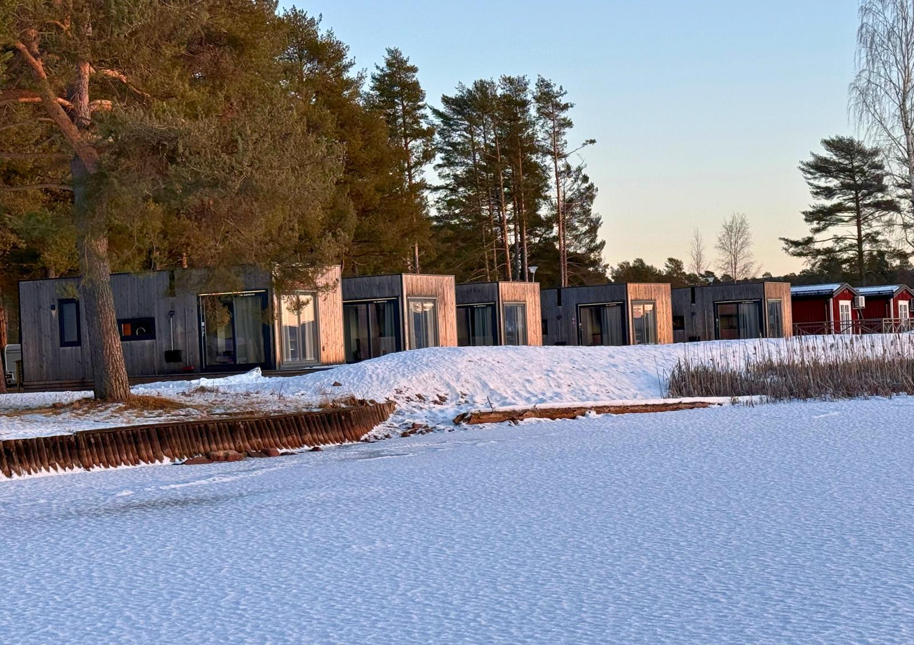

Ankunft
Du kommst bei den Hütten am Orsasee an. Zeit, deine Ausrüstung bereitzulegen und das Eis schon mal zu begutachten.

Eine gefegte Bahn von rund 15 Kilometern über den Orsasee, und abends deine eigene Hütte, einen Steinwurf vom Eis entfernt.


Eine Bahn von fünfzehn Kilometern, gefegt über einen gefrorenen See. Sonst ist da niemand.
Auf dem Orsasee in Dalarna wird jeden Winter eine lange Bahn gefegt. Hier läufst du selbstständig Schlittschuh, ganz in deinem eigenen Tempo.
Was du genau fährst, steht nie im Voraus fest. Natureis lässt sich nicht planen. Über den Online-Service bekommst du aktuelle Infos über das Eis, alle alternativen Schlittschuhorte und Wetter-Updates.
Das verlangt allerdings etwas von dir: Du musst selbst einschätzen können, ob das Eis sicher ist.
Du wohnst in Hütten im First Camp Orsa-Dalarna. Kein Hotelflur, sondern ein eigener Platz, an dem ihr abends zusammensitzt und morgens direkt aufs Eis geht.
Die genaue Aufteilung der Hütten stimmen wir auf die Gruppengröße ab. Frag einfach danach bei deiner Anfrage.
Orsa ist standardmäßig eine selbstständige Reise ohne Begleitung auf dem Eis, aber du kannst Begleitung auf dem Eis dazubuchen. Der Flug nach Schweden, die Unterkunft in den Hütten und der Transport vor Ort sind geregelt. Auf dem Eis bist du selbst unterwegs; das setzt voraus, dass du selbst einschätzen kannst, ob das Eis sicher ist.
Aktuelle Infos über das Eis, alle alternativen Schlittschuhorte und Wetter-Updates.
Du zahlst den gesamten Reisepreis bei der Buchung.
Infos über alternative Aktivitäten, und Aktivitäten, die du dazubuchen kannst.
Die Reihenfolge steht fest, die Inhalte nicht. Wo du Schlittschuh läufst, entscheidest du jeden Tag neu, je nach Wetter und Eis.
Du kommst bei den Hütten am Orsasee an. Zeit, deine Ausrüstung bereitzulegen und das Eis schon mal zu begutachten.
Ruhiger Start auf der gefegten Bahn, damit du dich an das Natureis und die Schlittschuhe gewöhnst.
Jeden Morgen schaust du mit den aktuellen Infos aus dem Online-Service nach dem Wetter und der Eisqualität und entscheidest, wohin es geht. Manchmal ist das die lange Bahn über den See, manchmal weichst du auf anderes Eis in der Umgebung aus. Unterwegs legst du eine Pause ein; wenn es sich anbietet, mit einem kleinen Lagerfeuer.
Je nach Abreisezeit ist morgens oft noch Zeit für eine letzte Runde über den See, bevor du losfährst.
Die genaue Anzahl der Tage hängt vom Reisetermin ab. Sobald der feststeht, passt sich das Programm daran an.
Bist du unsicher, ob etwas enthalten ist? Frag einfach nach, dann weißt du es sicher.
Standardmäßig nicht: Orsa ist eine selbstständige Reise ohne Begleitung auf dem Eis. Du läufst selbstständig Schlittschuh. Das setzt voraus, dass du selbst einschätzen kannst, ob das Eis sicher ist. Im Voraus bekommst du von uns Online-Service: aktuelle Infos über das Eis, alle alternativen Schlittschuhorte und Wetter-Updates. Möchtest du nicht allein aufs Eis, kannst du Begleitung auf dem Eis dazubuchen: €100 pro Tag für 1 Person, + €50 pro Tag für jede weitere Person, für so viele Tage, wie du möchtest.
Auf dem Orsasee in Dalarna wird jeden Winter eine lange Bahn von rund 15 Kilometern gefegt. Was du genau läufst, steht nie im Voraus fest: Das bestimmen das Eis und das Wetter. Über den Online-Service bekommst du aktuelle Infos über das Eis, alle alternativen Schlittschuhorte und Wetter-Updates.
Du wohnst in eigenen Hütten auf First Camp Orsa-Dalarna, direkt am Eis. Kein Hotelflur, sondern ein eigener Platz, an dem ihr abends zusammensitzt und morgens direkt aufs Eis geht. Die genaue Aufteilung der Hütten stimmen wir auf die Gruppengröße ab.
Inbegriffen sind die Unterkunft in den Hütten, der Flug nach Schweden, der Transport vor Ort, der Online-Service (aktuelle Infos über das Eis, alle alternativen Schlittschuhorte und Wetter-Updates) sowie Infos über alternative Aktivitäten und Aktivitäten, die du dazubuchen kannst. Nicht inbegriffen sind deine eigene Schlittschuhausrüstung und Winterkleidung, die vorgeschriebene Sicherheitsausrüstung (Eiskrallen und Helm) sowie Versicherungen.
Du musst kein Wettkampfläufer sein, aber du solltest selbstständig und kontrolliert Schlittschuh laufen können. Bist du dir über dein Niveau unsicher, denkt Joey vorab mit dir mit.
Das bestimmst du selbst, in deinem eigenen Tempo. Wie viele Kilometer daraus werden, steht nie im Voraus fest - das bestimmen das Eis, das Wetter und die Route des jeweiligen Tages.
Orsa ist standardmäßig eine selbstständige Reise ohne Begleitung auf dem Eis. Das setzt voraus, dass du selbst einschätzen kannst, ob das Eis sicher ist. Möchtest du das lieber nicht allein machen, kannst du Begleitung auf dem Eis dazubuchen. Der Flug, der Transport vor Ort und die Unterkunft sind schon geregelt, und über den Online-Service bekommst du aktuelle Infos über das Eis, alle alternativen Schlittschuhorte und Wetter-Updates. Es bleibt aber Natureis: gute Vorbereitung gehört dazu.
Natureis lässt sich nicht garantieren. Über den Online-Service bekommst du aktuelle Infos über das Eis, alle alternativen Schlittschuhorte und Wetter-Updates, damit du wo nötig auf einen anderen geeigneten See ausweichen kannst. Außerdem bekommst du Infos über alternative Aktivitäten und Aktivitäten, die du dazubuchen kannst.
Du bringst deine eigene Schlittschuhausrüstung mit. Für Natureis empfehlen wir Langlaufschlittschuhe. Außerdem brauchst du Winterkleidung, in der du einen ganzen Tag draußen sein kannst; Eiskrallen und ein Helm sind Pflicht.
Der Preis beginnt bei €995 pro Person für 4 Tage zu zweit. Wähle unten deinen Ankunfts- und deinen Abreisetag, dann siehst du sofort, was dein Zeitraum kostet.
Die verfügbaren Zeiträume und Preise erhältst du auf Anfrage. Schreib eine E-Mail an schaatsennovakse@outlook.com oder eine Nachricht an +31 6 17467643.
Auch Falun und Finnland sind selbstständige Reisen, bei denen der Flug und die Unterkunft inbegriffen sind. Bei Falun kannst du zwischen dem 10. Januar und dem 20. Februar Begleitung auf dem Eis dazubuchen. Begleitete Gruppenreisen werden noch geplant.